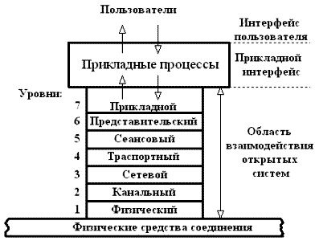
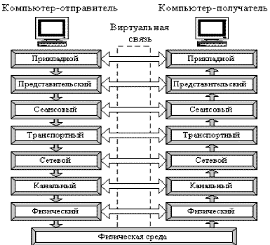
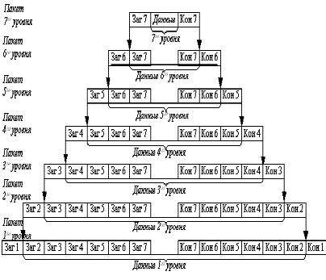

|  |
| Рис. 2.1 Модель OSI |
Для единого представления данных в сетях с неоднородными устройствами и программным обеспечением международная организация по стандартам ISO (International Standardization Organization) разработала базовую модель связи открытых систем OSI (Open System Interconnection). Эта модель описывает правила и процедуры передачи данных в различных сетевых средах при организации сеанса связи. Основными элементами модели являются уровни, прикладные процессы и физические средства соединения. На рис. 2.1 представлена структура базовой модели. Каждый уровень модели OSI выполняет определенную задачу в процессе передачи данных по сети. Базовая модель является основой для разработки сетевых протоколов. OSI разделяет коммуникационные функции в сети на семь уровней, каждый из которых обслуживает различные части процесса области взаимодействия открытых систем.
Модель OSI описывает только системные средства взаимодействия, не касаясь приложений конечных пользователей. Приложения реализуют свои собственные протоколы взаимодействия, обращаясь к системным средствам. Если приложение может взять на себя функции некоторых верхних уровней модели OSI, то для обмена данными оно обращается напрямую к системным средствам, выполняющим функции оставшихся нижних уровней модели OSI.
|  |
|
Рис. 2.2 Схема взаимодействия компьютеров |
Модель OSI можно разделить на две различных модели, как показано на рис.2.2:
горизонтальную модель на базе протоколов, обеспечивающую механизм взаимодействия программ и процессов на различных машинах;
вертикальную модель на основе услуг, обеспечиваемых соседними уровнями друг другу на одной машине.
Каждый уровень компьютера–отправителя взаимодействует с таким же уровнем компьютера-получателя, как будто он связан напрямую. Такая связь называется логической или виртуальной связью. В действительности взаимодействие осуществляется между смежными уровнями одного компьютера.
Итак, информация на компьютере-отправителе должна пройти через все уровни. Затем она передается по физической среде до компьютера–получателя и опять проходит сквозь все слои, пока не доходит до того же уровня, с которого она была послана на компьютере-отправителе.
В горизонтальной модели двум программам требуется общий протокол для обмена данными. В вертикальной модели соседние уровни обмениваются данными с использованием интерфейсов прикладных программ API (Application Programming Interface).
Перед подачей в сеть данные разбиваются на пакеты. Пакет (packet) – это единица информации, передаваемая между станциями сети. При отправке данных пакет проходит последовательно через все уровни программного обеспечения. На каждом уровне к пакету добавляется управляющая информация данного уровня (заголовок), которая необходима для успешной передачи данных по сети, как это показано на рис. 2.3, где Заг – заголовок пакета, Кон – конец пакета.
|  |
|
Рис. 2.3 Формирование пакета каждого уровня семиуровневой модели |
На принимающей стороне пакет проходит через все уровни в обратном порядке. На каждом уровне протокол этого уровня читает информацию пакета, затем удаляет информацию, добавленную к пакету на этом же уровне отправляющей стороной, и передает пакет следующему уровню. Когда пакет дойдет до Прикладного уровня, вся управляющая информация будет удалена из пакета, и данные примут свой первоначальный вид.
Каждый уровень модели выполняет свою функцию. Чем выше уровень, тем более сложную задачу он решает.
Отдельные уровни модели OSI удобно рассматривать как группы программ, предназначенных для выполнения конкретных функций. Один уровень, к примеру, отвечает за обеспечение преобразования данных из ASCII в EBCDIC и содержит программы необходимые для выполнения этой задачи.
|
|||||||
| Рис. 2.4 Функции уровней |
Каждый уровень обеспечивает сервис для вышестоящего уровня, запрашивая в свою очередь, сервис у нижестоящего уровня. Верхние уровни запрашивают сервис почти одинаково: как правило, это требование маршрутизации каких-то данных из одной сети в другую. Практическая реализация принципов адресации данных возложена на нижние уровни.
Рассматриваемая модель определяет взаимодействие открытых систем разных производителей в одной сети. Поэтому она выполняет для них координирующие действия по:
взаимодействию прикладных процессов;
формам представления данных;
единообразному хранению данных;
управлению сетевыми ресурсами;
безопасности данных и защите информации;
диагностике программ и технических средств.
На рис. 2.4 приведено краткое описание функций всех уровней.
Прикладной уровень обеспечивает прикладным процессам средства доступа к области взаимодействия, является верхним (седьмым) уровнем и непосредственно примыкает к прикладным процессам. В действительности прикладной уровень – это набор разнообразных протоколов, с помощью которых пользователи сети получают доступ к разделяемым ресурсам, таким как файлы, принтеры или гипертекстовые Web-страницы, а также организуют свою совместную работу, например с помощью протокола электронной почты [30]. Специальные элементы прикладного сервиса обеспечивают сервис для конкретных прикладных программ, таких как программы пересылки файлов и эмуляции терминалов. Если, например программе необходимо переслать файлы, то обязательно будет использован протокол передачи, доступа и управления файлами FTAM (File Transfer, Access, and Management). В модели OSI прикладная программа, которой нужно выполнить конкретную задачу (например, обновить базу данных на компьютере), посылает конкретные данные в виде Дейтаграммы на прикладной уровень. Одна из основных задач этого уровня - определить, как следует обрабатывать запрос прикладной программы, другими словами, какой вид должен принять данный запрос.
Единица данных, которой оперирует прикладной уровень, обычно называется сообщением (message).
Прикладной уровень выполняет следующие функции:
Описание форм и методов взаимодействия прикладных процессов.
Выполнение различных видов работ.
передача файлов;
управление заданиями;
управление системой и т.д.
Идентификация пользователей по их паролям, адресам, электронным подписям;
Определение функционирующих абонентов и возможности доступа к новым прикладным процессам;
Определение достаточности имеющихся ресурсов;
Организация запросов на соединение с другими прикладными процессами;
Передача заявок представительскому уровню на необходимые методы описания информации;
Выбор процедур планируемого диалога процессов;
Управление данными, которыми обмениваются прикладные процессы и синхронизация взаимодействия прикладных процессов;
Определение качества обслуживания (время доставки блоков данных, допустимой частоты ошибок);
Соглашение об исправлении ошибок и определении достоверности данных;
Согласование ограничений, накладываемых на синтаксис (наборы символов, структура данных).
Указанные функции определяют виды сервиса, которые прикладной уровень предоставляет прикладным процессам. Кроме этого, прикладной уровень передает прикладным процессам сервис, предоставляемый физическим, канальным, сетевым, транспортным, сеансовым и представительским уровнями.
На прикладном уровне необходимо предоставить в распоряжение пользователей уже переработанную информацию. С этим может справиться системное и пользовательское программное обеспечение.
Прикладной уровень отвечает за доступ приложений в сеть. Задачами этого уровня является перенос файлов, обмен почтовыми сообщениями и управление сетью.
К числу наиболее распространенных протоколов верхних трех уровней относятся:
FTP (File Transfer Protocol) протокол передачи файлов;
TFTP (Trivial File Transfer Protocol) простейший протокол пересылки файлов;
X.400 электронная почта;
Telnet работа с удаленным терминалом;
SMTP (Simple Mail Transfer Protocol) простой протокол почтового обмена;
CMIP (Common Management Information Protocol) общий протокол управления информацией;
SLIP (Serial Line IP) IP для последовательных линий. Протокол последовательной посимвольной передачи данных;
SNMP (Simple Network Management Protocol) простой протокол сетевого управления;
FTAM (File Transfer, Access, and Management) протокол передачи, доступа и управления файлами.
Уровень представления данных или представительский уровень представляет данные, передаваемые между прикладными процессами, в нужной форме данные.
Этот уровень обеспечивает то, что информация, передаваемая прикладным уровнем, будет понятна прикладному уровню в другой системе. В случаях необходимости уровень представления в момент передачи информации выполняет преобразование форматов данных в некоторый общий формат представления, а в момент приема, соответственно, выполняет обратное преобразование. Таким образом, прикладные уровни могут преодолеть, например, синтаксические различия в представлении данных. Такая ситуация может возникнуть в ЛВС с неоднотипными компьютерами (IBM PC и Macintosh), которым необходимо обмениваться данными. Так, в полях баз данных информация должна быть представлена в виде букв и цифр, а зачастую и в виде графического изображения. Обрабатывать же эти данные нужно, например, как числа с плавающей запятой.
В основу общего представления данных положена единая для всех уровней модели система ASN.1. Эта система служит для описания структуры файлов, а также позволяет решить проблему шифрования данных. На этом уровне может выполняться шифрование и дешифрование данных, благодаря которым секретность обмена данными обеспечивается сразу для всех прикладных сервисов. Примером такого протокола является протокол Secure Socket Layer (SSL), который обеспечивает секретный обмен сообщениями для протоколов прикладного уровня стека TCP/IP. Этот уровень обеспечивает преобразование данных (кодирование, компрессия и т.п.) прикладного уровня в поток информации для транспортного уровня.
Представительный уровень выполняет следующие основные функции:
Генерация запросов на установление сеансов взаимодействия прикладных процессов.
Согласование представления данных между прикладными процессами.
Реализация форм представления данных.
Представление графического материала (чертежей, рисунков, схем).
Засекречивание данных.
Передача запросов на прекращение сеансов.
Протоколы уровня представления данных обычно являются составной частью протоколов трех верхних уровней модели
Сеансовый уровень – это уровень, определяющий процедуру проведения сеансов между пользователями или прикладными процессами.
Сеансовый уровень обеспечивает управление диалогом для того, чтобы фиксировать, какая из сторон является активной в настоящий момент, а также предоставляет средства синхронизации. Последние позволяют вставлять контрольные точки в длинные передачи, чтобы в случае отказа можно было вернуться назад к последней контрольной точке, вместо того чтобы начинать все сначала. На практике немногие приложения используют сеансовый уровень, и он редко реализуется.
Сеансовый уровень управляет передачей информации между прикладными процессами, координирует прием, передачу и выдачу одного сеанса связи. Кроме того, сеансовый уровень содержит дополнительно функции управления паролями, управления диалогом, синхронизации и отмены связи в сеансе передачи после сбоя вследствие ошибок в нижерасположенных уровнях. Функции этого уровня состоят в координации связи между двумя прикладными программами, работающими на разных рабочих станциях. Это происходит в виде хорошо структурированного диалога. В число этих функций входит создание сеанса, управление передачей и приемом пакетов сообщений во время сеанса и завершение сеанса.
На сеансовом уровне определяется, какой будет передача между двумя прикладными процессами:
полудуплексной (процессы будут передавать и принимать данные по очереди);
дуплексной (процессы будут передавать данные, и принимать их одновременно).
В полудуплексном режиме сеансовый уровень выдает тому процессу, который начинает передачу, маркер данных. Когда второму процессу приходит время отвечать, маркер данных передается ему. Сеансовый уровень разрешает передачу только той стороне, которая обладает маркером данных.
Сеансовый уровень обеспечивает выполнение следующих функций:
Установление и завершение на сеансовом уровне соединения между взаимодействующими системами.
Выполнение нормального и срочного обмена данными между прикладными процессами.
Управление взаимодействием прикладных процессов.
Синхронизация сеансовых соединений.
Извещение прикладных процессов об исключительных ситуациях.
Установление в прикладном процессе меток, позволяющих после отказа либо ошибки восстановить его выполнение от ближайшей метки.
Прерывание в нужных случаях прикладного процесса и его корректное возобновление.
Прекращение сеанса без потери данных.
Передача особых сообщений о ходе проведения сеанса.
Сеансовый уровень отвечает за организацию сеансов обмена данными между оконечными машинами. Протоколы сеансового уровня обычно являются составной частью протоколов трех верхних уровней модели.
Транспортный уровень предназначен для передачи пакетов через коммуникационную сеть. На транспортном уровне пакеты разбиваются на блоки.
На пути от отправителя к получателю пакеты могут быть искажены или утеряны. Хотя некоторые приложения имеют собственные средства обработки ошибок, существуют и такие, которые предпочитают сразу иметь дело с надежным соединением. Работа транспортного уровня заключается в том, чтобы обеспечить приложениям или верхним уровням модели (прикладному и сеансовому) передачу данных с той степенью надежности, которая им требуется. Модель OSI определяет пять классов сервиса, предоставляемых транспортным уровнем. Эти виды сервиса отличаются качеством предоставляемых услуг: срочностью, возможностью восстановления прерванной связи, наличием средств мультиплексирования нескольких соединений между различными прикладными протоколами через общий транспортный протокол, а главное способностью к обнаружению и исправлению ошибок передачи, таких как искажение, потеря и дублирование пакетов.
Транспортный уровень определяет адресацию физических устройств (систем, их частей) в сети. Этот уровень гарантирует доставку блоков информации адресатам и управляет этой доставкой. Его главной задачей является обеспечение эффективных, удобных и надежных форм передачи информации между системами. Когда в процессе обработки находится более одного пакета, транспортный уровень контролирует очередность прохождения пакетов. Если проходит дубликат принятого ранее сообщения, то данный уровень опознает это и игнорирует сообщение.
В функции транспортного уровня входят:
Управление передачей по сети и обеспечение целостности блоков данных.
Обнаружение ошибок, частичная их ликвидация и сообщение о неисправленных ошибках.
Восстановление передачи после отказов и неисправностей.
Укрупнение или разделение блоков данных.
Предоставление приоритетов при передаче блоков (нормальная или срочная).
Подтверждение передачи.
Ликвидация блоков при тупиковых ситуациях в сети.
Начиная с транспортного уровня, все вышележащие протоколы реализуются программными средствами, обычно включаемыми в состав сетевой операционной системы.
Наиболее распространенные протоколы транспортного уровня включают в себя:
TCP (Transmission Control Protocol) протокол управления передачей стека TCP/IP;
UDP (User Datagram Protocol) пользовательский протокол дейтаграмм стека TCP/IP;
NCP (NetWare Core Protocol) базовый протокол сетей NetWare;
SPX (Sequenced Packet eXchange) упорядоченный обмен пакетами стека Novell;
TP4 (Transmission Protocol) – протокол передачи класса 4.
Сетевой уровень обеспечивает прокладку каналов, соединяющих абонентские и административные системы через коммуникационную сеть, выбор маршрута наиболее быстрого и надежного пути.
Сетевой уровень устанавливает связь в вычислительной сети между двумя системами и обеспечивает прокладку виртуальных каналов между ними. Виртуальный или логический канал - это такое функционирование компонентов сети, которое создает взаимодействующим компонентам иллюзию прокладки между ними нужного тракта. Кроме этого, сетевой уровень сообщает транспортному уровню о появляющихся ошибках. Сообщения сетевого уровня принято называть пакетами (packet). В них помещаются фрагменты данных. Сетевой уровень отвечает за их адресацию и доставку.
Прокладка наилучшего пути для передачи данных называется маршрутизацией, и ее решение является главной задачей сетевого уровня. Эта проблема осложняется тем, что самый короткий путь не всегда самый лучший. Часто критерием при выборе маршрута является время передачи данных по этому маршруту; оно зависит от пропускной способности каналов связи и интенсивности трафика, которая может изменяться с течением времени. Некоторые алгоритмы маршрутизации пытаются приспособиться к изменению нагрузки, в то время как другие принимают решения на основе средних показателей за длительное время. Выбор маршрута может осуществляться и по другим критериям, например, надежности передачи.
Протокол канального уровня обеспечивает доставку данных между любыми узлами только в сети с соответствующей типовой топологией. Это очень жесткое ограничение, которое не позволяет строить сети с развитой структурой, например, сети, объединяющие несколько сетей предприятия в единую сеть, или высоконадежные сети, в которых существуют избыточные связи между узлами.
Таким образом, внутри сети доставка данных регулируется канальным уровнем, а вот доставкой данных между сетями занимается сетевой уровень. При организации доставки пакетов на сетевом уровне используется понятие номер сети. В этом случае адрес получателя состоит из номера сети и номера компьютера в этой сети.
Сети соединяются между собой специальными устройствами, называемыми маршрутизаторами. Маршрутизатор это устройство, которое собирает информацию о топологии межсетевых соединений и на ее основании пересылает пакеты сетевого уровня в сеть назначения. Для того чтобы передать сообщение от отправителя, находящегося в одной сети, получателю, находящемуся в другой сети, нужно совершить некоторое количество транзитных передач (hops) между сетями, каждый раз, выбирая подходящий маршрут. Таким образом, маршрут представляет собой последовательность маршрутизаторов, по которым проходит пакет.
Сетевой уровень отвечает за деление пользователей на группы и маршрутизацию пакетов на основе преобразования MAC-адресов в сетевые адреса. Сетевой уровень обеспечивает также прозрачную передачу пакетов на транспортный уровень.
Сетевой уровень выполняет функции:
Создание сетевых соединений и идентификация их портов.
Обнаружение и исправление ошибок, возникающих при передаче через коммуникационную сеть.
Управление потоками пакетов.
Организация (упорядочение) последовательностей пакетов.
Маршрутизация и коммутация.
Сегментирование и объединение пакетов.
На сетевом уровне определяется два вида протоколов. Первый вид относится к определению правил передачи пакетов с данными конечных узлов от узла к маршрутизатору и между маршрутизаторами. Именно эти протоколы обычно имеют в виду, когда говорят о протоколах сетевого уровня. Однако часто к сетевому уровню относят и другой вид протоколов, называемых протоколами обмена маршрутной информацией. С помощью этих протоколов маршрутизаторы собирают информацию о топологии межсетевых соединений.
Протоколы сетевого уровня реализуются программными модулями операционной системы, а также программными и аппаратными средствами маршрутизаторов.
Наиболее часто на сетевом уровне используются протоколы:
IP (Internet Protocol) протокол Internet, сетевой протокол стека TCP/IP, который предоставляет адресную и маршрутную информацию;
IPX (Internetwork Packet Exchange) протокол межсетевого обмена пакетами, предназначенный для адресации и маршрутизации пакетов в сетях Novell;
X.25 международный стандарт для глобальных коммуникаций с коммутацией пакетов (частично этот протокол реализован на уровне 2);
CLNP (Connection Less Network Protocol) сетевой протокол без организации соединений.
Единицей информации канального уровня являются кадры (frame). Кадры – это логически организованная структура, в которую можно помещать данные. Задача канального уровня передавать кадры от сетевого уровня к физическому уровню.
На физическом уровне просто пересылаются биты. При этом не учитывается, что в некоторых сетях, в которых линии связи используются попеременно несколькими парами взаимодействующих компьютеров, физическая среда передачи может быть занята. Поэтому одной из задач канального уровня является проверка доступности среды передачи. Другой задачей канального уровня является реализация механизмов обнаружения и коррекции ошибок.
Канальный уровень обеспечивает корректность передачи каждого кадра, помещая специальную последовательность бит, в начало и конец каждого кадра, чтобы отметить его, а также вычисляет контрольную сумму, суммируя все байты кадра определенным способом и добавляя контрольную сумму к кадру. Когда кадр приходит, получатель снова вычисляет контрольную сумму полученных данных и сравнивает результат с контрольной суммой из кадра. Если они совпадают, кадр считается правильным и принимается. Если же контрольные суммы не совпадают, то фиксируется ошибка.
Задача канального уровня - брать пакеты, поступающие с сетевого уровня и готовить их к передаче укладывая в кадр соответствующего размера. Этот уровень обязан определить, где начинается и где заканчивается блок, а также обнаруживать ошибки передачи.
На этом же уровне определяются правила использования физического уровня узлами сети. Электрическое представление данных в ЛВС (биты данных, методы кодирования данных и маркеры) распознаются на этом и только на этом уровне. Здесь обнаруживаются и исправляются (путем требований повторной передачи данных) ошибки.
Канальный уровень обеспечивает создание, передачу и прием кадров данных. Этот уровень обслуживает запросы сетевого уровня и использует сервис физического уровня для приема и передачи пакетов. Спецификации IEEE 802.Х делят канальный уровень на два подуровня:
LLC (Logical Link Control) управление логическим каналом осуществляет логический контроль связи. Подуровень LLC обеспечивает обслуживание сетевого уровня и связан с передачей и приемом пользовательских сообщений.
MAC (Media Assess Control) контроль доступа к среде. Подуровень MAC регулирует доступ к разделяемой физической среде (передача маркера или обнаружение коллизий или столкновений) и управляет доступом к каналу связи.
Подуровень LLC находится выше подуровня МАC.
Канальный уровень определяет доступ к среде и управление передачей посредством процедуры передачи данных по каналу. При больших размерах передаваемых блоков данных канальный уровень делит их на кадры и передает кадры в виде последовательностей. При получении кадров уровень формирует из них переданные блоки данных. Размер блока данных зависит от способа передачи, качества канала, по которому он передается.
В локальных сетях протоколы канального уровня используются компьютерами, мостами, коммутаторами и маршрутизаторами. В компьютерах функции канального уровня реализуются совместными усилиями сетевых адаптеров и их драйверов.
Канальный уровень может выполнять следующие виды функций:
Организация (установление, управление, расторжение) канальных соединений и идентификация их портов.
Организация и передача кадров.
Обнаружение и исправление ошибок.
Управление потоками данных.
Обеспечение прозрачности логических каналов (передачи по ним данных, закодированных любым способом).
Наиболее часто используемые протоколы на канальном уровне включают:
HDLC (High Level Data Link Control) протокол управления каналом передачи данных высокого уровня, для последовательных соединений;
IEEE 802.2 LLC (тип I и тип II) обеспечивают MAC для сред 802.x;
Ethernet сетевая технология по стандарту IEEE 802.3 для сетей, использующая шинную топологию и коллективный доступ с прослушиванием несущей и обнаружением конфликтов;
Token ring сетевая технология по стандарту IEEE 802.5, использующая кольцевую топологию и метод доступа к кольцу с передачей маркера;
FDDI (Fiber Distributed Date Interface Station) сетевая технология по стандарту IEEE 802.6, использующая оптоволоконный носитель;
X.25 международный стандарт для глобальных коммуникаций с коммутацией пакетов;
Frame relay сеть, организованная из технологий Х25 и ISDN.
Физический уровень предназначен для сопряжения с физическими средствами соединения. Физические средства соединения – это совокупность физической среды, аппаратных и программных средств, обеспечивающая передачу сигналов между системами. Физическая среда – это материальная субстанция, через которую осуществляется передача сигналов. Физическая среда является основой, на которой строятся физические средства соединения. В качестве физической среды широко используются эфир, металлы, оптическое стекло и кварц.
Физический уровень состоит из Подуровня стыковки со средой и Подуровня преобразования передачи.
Первый из них обеспечивает сопряжение потока данных с используемым физическим каналом связи. Второй осуществляет преобразования, связанные с применяемыми протоколами. Физический уровень обеспечивает физический интерфейс с каналом передачи данных, а также описывает процедуры передачи сигналов в канал и получения их из канала. На этом уровне определяются электрические, механические, функциональные и процедурные параметры для физической связи в системах. Физический уровень получает пакеты данных от вышележащего канального уровня и преобразует их в оптические или электрические сигналы, соответствующие 0 и 1 бинарного потока. Эти сигналы посылаются через среду передачи на приемный узел. Механические и электрические / оптические свойства среды передачи определяются на физическом уровне и включают:
тип кабелей и разъемов;
разводку контактов в разъемах;
схему кодирования сигналов для значений 0 и 1.
Установление и разъединение физических соединений.
Передача сигналов в последовательном коде и прием.
Прослушивание, в нужных случаях, каналов.
Идентификация каналов.
Оповещение о появлении неисправностей и отказов.
Оповещение о появлении неисправностей и отказов связано с тем, что на физическом уровне происходит обнаружение определенного класса событий, мешающих нормальной работе сети (столкновение кадров, посланных сразу несколькими системами, обрыв канала, отключение питания, потеря механического контакта и т. д.). Виды сервиса, предоставляемого канальному уровню, определяются протоколами физического уровня. Прослушивание канала необходимо в тех случаях, когда к одному каналу подключается группа систем, но одновременно передавать сигналы разрешается только одной из них. Поэтому прослушивание канала позволяет определить, свободен ли он для передачи. В ряде случаев для более четкого определения структуры физический уровень разбивается на несколько подуровней. Например, физический уровень беспроводной сети делится на три подуровня рис. 2.5.
|
||||||
|
Рис. 2.5 Физический уровень беспроводной локальной сети |
Функции физического уровня реализуются во всех устройствах, подключенных к сети. Со стороны компьютера функции физического уровня выполняются сетевым адаптером. Повторители являются единственным типом оборудования, которое работает только на физическом уровне.
Выполняется преобразование данных, поступающих от более высокого уровня, в сигналы передающие по кабелю. В глобальных сетях на этом уровне могут использоваться модемы и интерфейс RS-232C. В локальных сетях для преобразования данных применяют сетевые адаптеры, обеспечивающие скоростную передачу данных в цифровой форме. Пример протокола физического уровня - это широко известный интерфейс RS-232C / CCITT V.2, который является наиболее широко распространенной стандартной последовательной связью между компьютерами и периферийными устройствами.
Можно считать этот уровень, отвечающим за аппаратное обеспечение.
Физический уровень может обеспечивать как асинхронную (последовательную) так и синхронную (параллельную) передачу, которая применяется для некоторых мэйнфреймов и мини - компьютеров. На Физическом уровне должна быть определена схема кодирования для представления двоичных значений с целью их передачи по каналу связи. Во многих локальных сетях используется манчестерское кодирование.
Примером протокола физического уровня может служить спецификация 10Base-T технологии Ethernet, которая определяет в качестве используемого кабеля неэкранированную витую пару категории 3 с волновым сопротивлением 100 Ом, разъем RJ-45, максимальную длину физического сегмента 100 метров, манчестерский код для представления данных на кабеле, и другие характеристики среды и электрических сигналов.
К числу наиболее распространенных спецификаций физического уровня относятся:
EIA-RS-232C, CCITT V.24/V.28 - механические и электрические характеристики несбалансированного последовательного интерфейса;
EIA-RS-422/449, CCITT V.10 - механические, электрические и оптические характеристики сбалансированного последовательного интерфейса;
Ethernet – сетевая технология по стандарту IEEE 802.3 для сетей, использующая шинную топологию и коллективный доступ с прослушиванием несущей и обнаружением конфликтов;
Token ring – сетевая технология по стандарту IEEE 802.5, использующая кольцевую топологию и метод доступа к кольцу с передачей маркера;
Функции всех уровней модели OSI могут быть отнесены к одной из двух групп: либо к функциям, зависящим от конкретной технической реализации сети, либо к функциям, ориентированным на работу с приложениями.
Три нижних уровня физический, канальный и сетевой являются сетезависимыми, протоколы этих уровней тесно связаны с технической реализацией сети, с используемым коммуникационным оборудованием. Например, переход на оборудование FDDI означает смену протоколов физического и канального уровня во всех узлах сети.
Три верхних уровня сеансовый, уровень представления и прикладной ориентированы на приложения и мало зависят от технических особенностей построения сети. На протоколы этих уровней не влияют никакие изменения в топологии сети, замена оборудования или переход на другую сетевую технологию. Так, переход от Ethernet на высокоскоростную технологию 100VG-AnyLAN не потребует никаких изменений в программных средствах, реализующих функции прикладного, представительного и сеансового уровней.
Транспортный уровень является промежуточным, он скрывает все детали функционирования нижних уровней от верхних уровней. Это позволяет разрабатывать приложения, не зависящие от технических средств, непосредственно занимающихся транспортировкой сообщений.
Одна рабочая станция взаимодействует с другой рабочей станцией посредством протоколов всех семи уровней. Это взаимодействие станции осуществляют через различные коммуникационные устройства: концентраторы, модемы, мосты, коммутаторы, маршрутизаторы, мультиплексоры. В зависимости от типа коммуникационное устройство может работать:
либо только на физическом уровне (повторитель);
либо на физическом и канальном уровнях (мост);
либо на физическом, канальном и сетевом уровнях, иногда захватывая и транспортный уровень (маршрутизатор).
Модель OSI представляет собой хотя и очень важную, но только одну из многих моделей коммуникаций. Эти модели и связанные с ними стеки протоколов могут отличаться количеством уровней, их функциями, форматами сообщений, сервисами, предоставляемыми на верхних уровнях, и прочими параметрами.
Иерархически организованная совокупность протоколов, решающих задачу взаимодействия узлов сети, называется стеком коммуникационных протоколов.
Протоколы соседних уровней, находящихся в одном узле, взаимодействуют друг с другом также в соответствии с четко определенными правилами и с помощью стандартизованных форматов сообщений. Эти правила принято называть интерфейсом. Интерфейс определяет набор услуг, которые нижележащий уровень предоставляет вышележащему уровню.
Что такое OSI?
Каково назначение базовой модели взаимодействия открытых систем?
На какие уровни разбита базовая модель OSI?
Какие функции несет уровень в модели взаимодействия открытых систем?
На какие единицы разбивается информация для передачи данных по сети?
Что обеспечивает горизонтальная составляющая модели взаимодействия открытых систем?
Какие элементы являются основными элементами для базовой модели взаимодействия открытых систем?
Какие функции выполняются на физическом уровне?
Какие вопросы решаются на физическом уровне?
Какой уровень модели OSI преобразует данные в общий формат для передачи по сети?
Какое оборудование используется на физическом уровне?
Какие известны спецификации физического уровня?
Перечислить функции канального уровня.
Какие функции канального уровня?
На какие подуровни разделяется канальный уровень и каковы их функции?
Функцией какого уровня является засекречивание и реализация форм представления данных?
Какие протоколы используются на канальном уровне?
Какое оборудование используется на канальном уровне?
Какие функции выполняются и какие протоколы используются на сетевом уровне?
Какое оборудование используется на сетевом уровне?
Перечислить функции транспортного уровня.
Какие протоколы используются на транспортном уровне?
Перечислить оборудование транспортного уровня.
Дать определение сеансового уровня.
Какой уровень отвечает за доступ приложений в сеть?
Задачи уровня представления данных.
Перечислить функции прикладного уровня.
Перечислить протоколы верхних уровней.
Дать определение стандартных стеков коммуникационных протоколов.